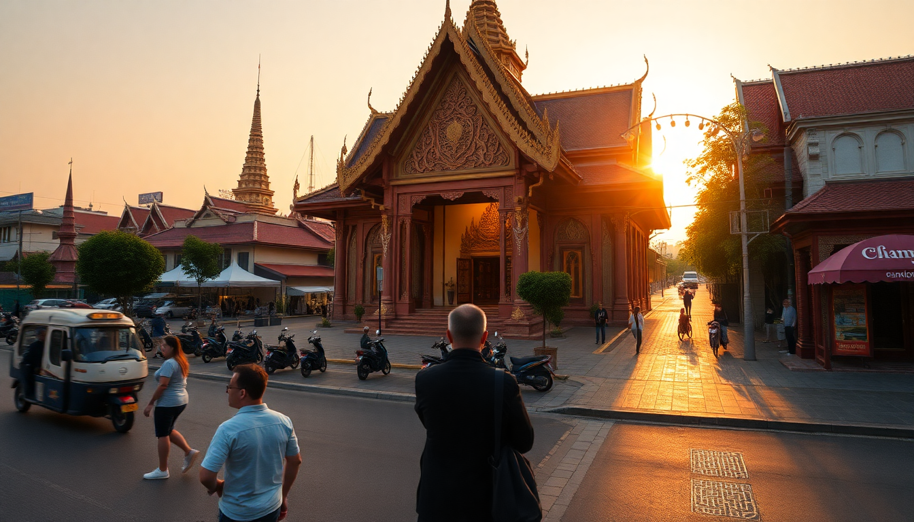

Best Time to Visit Thailand: Month-by-Month Guide

I’ve visited Thailand four times across different seasons, and I’ll be honest: there’s no single “perfect” month. What works for a beach bum in Phuket will wreck a temple-hopping trip in Chiang Mai. In this guide, I’ll walk you through what each season actually feels like in Bangkok, Chiang Mai, and Phuket—so you can pick the dates that match your trip style, not some generic travel blog list.
When is the best time to visit Thailand overall?
The short answer: November through February. The weather is cooler and drier across most of the country. Humidity drops. Skies stay blue. It’s the sweet spot.
But “cool” is relative. In Bangkok, December still hits 32°C (90°F) with humidity that glues your shirt to your back. The difference is that the air feels less suffocating than in April. I walked the Grand Palace grounds in January without needing a second shower by lunch.
That said, this is also peak tourist season. Hotels in Sukhumvit or near the Old City in Chiang Mai book out months ahead. Prices at places like the Shangri-La Bangkok or Raya Heritage in Chiang Mai double. If you’re flexible, shoulder months—October and March—give you decent weather with thinner crowds.
What is the best time to visit Bangkok?
Bangkok works year-round if you can handle heat. But I’d target November to January for comfort.
- November–January: Coolest temps (25–30°C). Minimal rain. Great for outdoor spots like Wat Pho and the Chatuchak Weekend Market.
- March–May: Hottest. April averages 35°C with “feels-like” temps over 40°C. I made the mistake of visiting the Temple of the Emerald Buddha in late April. My phone overheated and shut down.
- June–October: Rainy season. Afternoon downpours last an hour, then clear. Streets flood in Thong Lo and Sukhumvit Soi 22, but taxis still run. Hotels drop rates 30–40%.
I’d avoid April and May unless you’re on a budget. The heat is genuinely dangerous for midday walking. If you do go, stick to the BTS Skytrain and mall-hopping at Siam Paragon or CentralWorld during peak sun hours.
When should I visit Chiang Mai for good weather?
Chiang Mai is trickier. The weather is pleasant from November to February, but the real enemy here is burning season.
- November–February: Cool and clear. Temps dip to 15°C at night. Perfect for exploring Doi Suthep or the Old City moat area. I did a morning walk around Wat Chedi Luang in December and needed a light jacket.
- March–May: Burning season. Farmers burn crop residue, and the air fills with PM2.5 smoke. In April 2023, AQI readings hit 250+. I could taste the smoke from my hotel room at Nimman.
- June–October: Rainy season. Lush green hills. Lower crowds at Doi Inthanon National Park. But trails get muddy. The Ping River swells.
If you want clear skies and breathable air, go November–February. If you’re on a shoestring, September–October offers cheap rooms at places like BED Nimman Hotel, but pack a rain jacket.
What is the best time for Phuket beaches and islands?
Phuket’s “best” season is November to April. The Andaman Sea stays calm. Sunsets at Kata Beach are postcard-level. Snorkeling at Railay Beach (accessible by longtail from Phuket) has visibility up to 20 meters.
- November–February: Dry, sunny, 28–32°C. Crowded. Patong is a zoo. I preferred staying at Kata or Karon for quieter mornings.
- March–April: Hottest but still dry. Water is warm. Great for island-hopping to Phi Phi or James Bond Island. April brings Songkran (Thai New Year) water fights—fun if you don’t mind being soaked 24/7.
- May–October: Monsoon season. Rough seas. Many island tours cancel. Rain falls in short bursts, but humidity is high. I got stuck in a storm at Promthep Cape in June—not worth the photo.
If you’re set on diving or snorkeling, skip June–October. The water gets churned up. If you just want cheap beachfront drinks and don’t mind rain, low season rates at The Boathouse Wine & Grill in Kata are a steal.
Should I visit during the rainy season?
It depends on your tolerance for uncertainty. Rainy season (June–October) isn’t a washout. In Bangkok and Phuket, showers usually hit between 2–5 PM, then clear. You can plan mornings for sightseeing and afternoons for massages or mall time.
But in Chiang Mai, rain can last all day in September. I once waited out a storm for three hours at Ristr8to Coffee in Nimman. Good coffee, but not how I wanted to spend an afternoon.
Pros of rainy season:
- Lower prices: Hotels in Khao San Road drop to $20/night.
- Fewer tourists: Wat Phra Singh in Chiang Mai was nearly empty in July.
- Greener landscapes: Rice terraces near Doi Suthep are vibrant.
Cons:
- Flooding: Parts of Ayutthaya can flood in October.
- Cancelled tours: Boat trips to Koh Samui or Krabi get called off last-minute.
- Muddy trails: Hiking in Doi Inthanon becomes slippery.
I’d only recommend rainy season if you’re a budget traveler or prefer indoor activities (cooking classes, Thai boxing, spa days). Otherwise, stick to dry months.
What about festivals—do they affect timing?
Yes. Two major festivals can make or break your trip.
- Songkran (April 13–15): Nationwide water fight. Fun in Bangkok’s Silom Road or Chiang Mai’s Old City moat. But everything is wet. You can’t walk without getting drenched. Hotels triple prices. If you hate crowds, avoid April.
- Loy Krathong (November, date varies): Floating lanterns and krathong baskets on rivers. Chiang Mai’s celebration is the biggest. The Ping River fills with lights. It’s magical, but accommodation in the Old City books out six months ahead.
I did Loy Krathong in Chiang Mai in 2022. It was stunning, but I booked my room at Tamni in November for the following year. Plan that far ahead.
FAQ
Is Thailand too hot in April? Yes, especially Bangkok and Chiang Mai. April is the hottest month, with averages of 35°C and high humidity. If you’re heat-sensitive, avoid outdoor sightseeing between 11 AM and 3 PM. Stick to air-conditioned malls or take a break at a café like Featherstone Bistro in Bangkok.
Can I visit Phuket in August? You can, but expect rain. August is mid-monsoon. The sea can be rough, and some speedboat tours to nearby islands get cancelled. If you’re okay with afternoon showers and cheaper hotels, it’s workable. Just don’t plan a diving trip.
When is the cheapest month to fly to Thailand? September and October. These are the tail end of rainy season. Airlines drop fares. I found round-trip flights from LAX to Bangkok for $550 in September 2023. Hotels in Phuket’s Patong were under $30 a night. The trade-off: you’ll need rain gear.
Conclusion
- November–February is the safest bet for all three destinations: Bangkok’s temples, Chiang Mai’s mountains, and Phuket’s beaches.
- March–May works if you can handle extreme heat—but skip Chiang Mai during burning season.
- June–October saves you money but comes with rain, rough seas, and potential flooding.
- Book accommodation early for November (Loy Krathong) and April (Songkran).
- If you’re flexible, October and March offer the best compromise between weather and crowds.